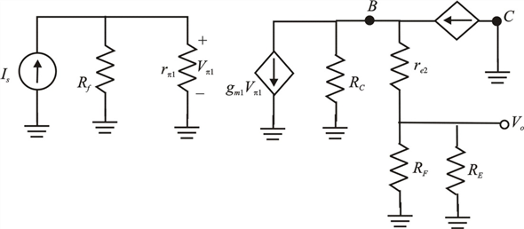

Step 1:
(a)
Refer to the circuit diagram of feedback trans-resistance in figure 10.11(d) in the textbook.
The source current,  has zero dc component.
has zero dc component.
Determine the emitter current of transistor , which is equal to the current through the resistor,
, which is equal to the current through the resistor,  .
.
The supply voltages,
The resistances,
The base-to-emitter voltage of transistors, 
Current gain 
Substitute  for
for  , for
, for  and for
and for  in the equation.
in the equation.
Step 2:
Calculate the output voltage.
Calculate the voltage at the base of transistor .
.
Substitute  for
for  in the equation.
in the equation.
Determine the current through the resistor .
.

Step 3:
Determine the collector current of transistor .
.
Thus, the dc collector currents of transistors are.
The dc voltage  at the output is
at the output is .
.
Step 4:
(b)
Draw the A circuit is shown in Figure 1.

Figure 1
Step 5:
Write the formula for open-loop trans-resistance of shunt-shunt feedback amplifier.
Write the formula for output voltage of the amplifier.
Determine the trans-conductance.
Step 6:
Calculate the resistance, .
Calculate the emitter resistance.
Calculate the voltage.
Step 7:
Now substitute all the calculated values in the output voltage equation.
Calculate the open-loop trans-resistance of the amplifier.
Thus, the open-loop trans-resistance  of the amplifier is .
of the amplifier is .
Step 8:
Calculate the input resistance.
Thus, the input resistance  of the amplifier is.
of the amplifier is.
Step 9:
Calculate the output resistance.
Thus, the output resistance  of the amplifier is.
of the amplifier is.
Step 10:
(c)
Calculate the feedback factor of feedback trans-resistance amplifier.
Thus, the feedback factor  of the amplifier is.
of the amplifier is.
Step 11:
Calculate the loop gain of the amplifier.
Thus, the loop gain  of the amplifier is.
of the amplifier is.
Step 12:
Calculate the amount of feedback.
Thus, the amount of feedback  of the amplifier is.
of the amplifier is.
Step 13:
(d)
Calculate the closed loop gain.

Thus, the closed loop gain of the amplifier  is.
is.
Step 14:
Calculate the input resistance with feedback.
Thus, the input resistance of the feedback amplifier  is.
is.
Step 15:
Calculate the output resistance of the feedback amplifier.
Thus, the output resistance of the feedback amplifier  is.
is.